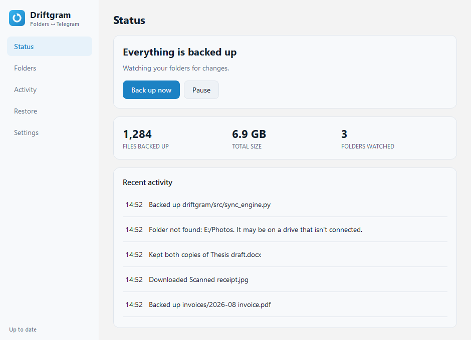

Free · Open source · Windows & Linux
Your folders,
through your own
Telegram account.
Save a file on your PC and it appears in Telegram. Send one from your phone and it lands in the right folder. Nothing passes through anybody else's server, and there's no storage limit beyond Telegram's own.
v1.0.0 · 27 MB installer · no account to create
The part that's hard
A two-way sync that doesn't feed itself
Upload a file and Telegram hands it straight back as a new message. Naive tools download that, touch the local file, notice the change and upload it again — forever. Driftgram keeps a local record of the size, timestamp and hash of everything it has synced, and nothing moves unless the content actually differs.
Every upload and download path checks this record before acting, and updates it before returning.
What you get
Files come back intact
Everything is uploaded as a document, so Telegram never recompresses it. A photo returns exactly as it went up.
No 50 MB ceiling
Driftgram signs in as you rather than as a bot, so the limit is Telegram's own — about 2 GB a file, or 4 GB with Premium.
Conflicts keep both copies
Edit offline while a newer copy arrives from your phone and yours stays put; Telegram's is saved beside it as name (from Telegram).ext.
Restore what you deleted
Telegram still holds it. Browse everything ever backed up, tick what you want, and bring it back.
Skip what isn't worth it
gitignore-style rules per folder and globally, with presets for build output, videos, disc images and logs.
Nothing phones home
Driftgram talks to Telegram and nothing else. No telemetry, no update check, no server belonging to anyone else.
The app
Five screens, no terminal
Built for people who have never opened one. There's a command-line version too, for those who have.

Setup
Four steps, about five minutes
-
1
Connect to Telegram
Telegram asks every app that talks to it to be registered, including this one, on your account. It's free and takes a minute — Driftgram opens the page and you copy two values back. The alternative is one shared key for everybody, where a single ban breaks every user at once. Yours can't be taken away by someone else's misuse.
-
2
Sign in
Your phone number, the code Telegram sends, and your two-step password if you have one.
-
3
Choose folders
Pick what to back up, and tick any presets for things not worth uploading.
-
4
Preferences
Start at login, whether deletions should mirror, and what to do when the same file changes in two places. Then it runs.
Before you rely on it
What it won't do
A backup tool is worth nothing if you find out its limits after you've trusted it. So, plainly:
Deletions only mirror while it's running
Telegram keeps no record of a deleted message, so a deletion that happened while Driftgram was closed can never be detected afterwards. This is an API limitation, not a missing feature.
Folders can't nest
A file would belong to two of them, so Driftgram refuses a folder sitting inside — or containing — one you already sync.
Some Linux filenames can't reach Windows
notes:2024.txt is legal on Linux and impossible on Windows. Those are skipped and named in the log, rather than renamed behind your back.
The Windows installer isn't signed
SmartScreen will warn you once. A certificate costs a few hundred dollars a year. Choose More info → Run anyway if you're happy to.
Your session file is equivalent to being logged into your Telegram account — never share it. Security policy.
Download
Version 1.0.0
Built and packaged by CI on Windows and Ubuntu 22.04. The Windows installer is per-user, so there's no administrator prompt.
Prefer the terminal? The command-line version needs no Qt.
pip install -r requirements.txt
python -m src.main